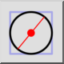
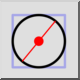
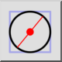
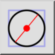

Centro, Diâmetro
Barra de Ferramenta / Ícone:
 

Menu: Draw > Círculo > Centro, Diâmetro
Atalho: C, A
Comandos: circlediameter | ca
Esta é uma tradução automática.
Barra de Ferramenta / Ícone:
 

Menu: Draw > Círculo > Centro, Diâmetro
Atalho: C, A
Comandos: circlediameter | ca
Essa ferramenta permite criar um círculo com um centro e um raio.